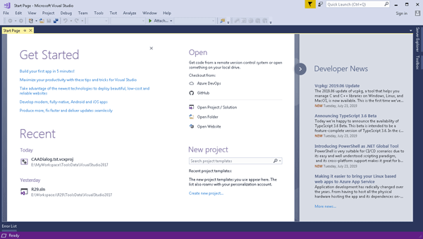
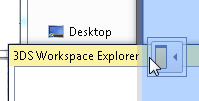
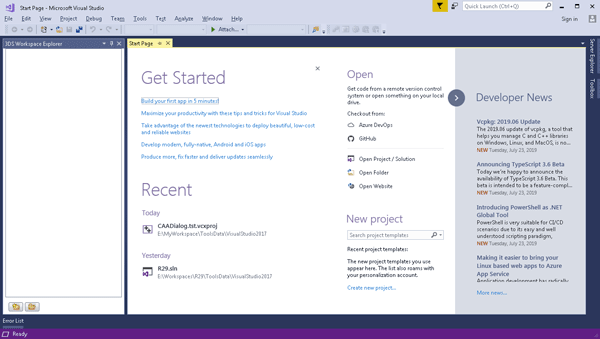
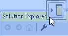
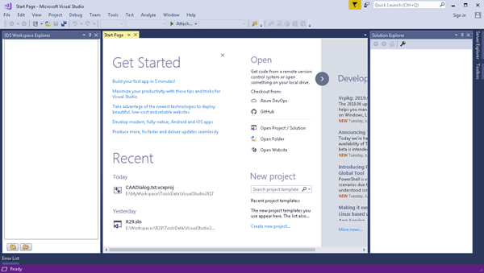
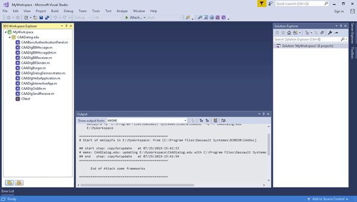
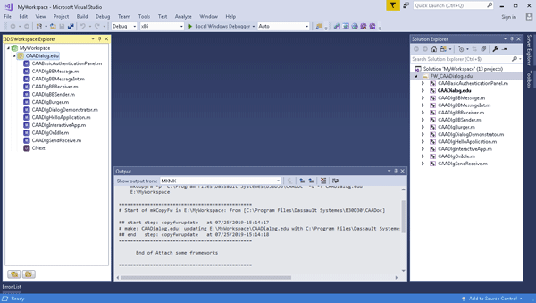
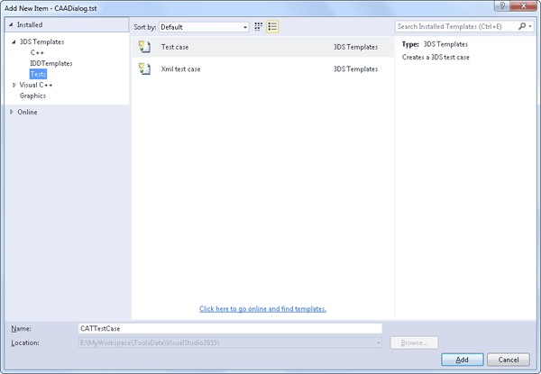

-
Click Microsoft Visual Studio 2017 shortcut on your desktop, or
on the Start menu, point to All Programs, and click
Visual Studio 2017.
Microsoft Visual Studio 2017 opens and the Start Page
is displayed.

-
On the View menu, point to 3DS Views, and click
3DS Workspace Explorer.
The 3DS Workspace Explorer opens.
-
Drag the 3DS Workspace Explorer and drop it onto the left hand arrow.

The 3DS Workspace Explorer is docked on the left of the
Microsoft Visual Studio 2017 window.

-
On the View menu, click
Solution Explorer.
-
Drag the Solution Explorer and drop it onto the right hand arrow.

The Solution Explorer is docked on the right of the
Microsoft Visual Studio 2017 window.

C++ Interactive Dashboard is ready for creating a workspace.
-
In the 3DS Workspace Explorer, right click
MyWorkspace, and click Copy Framework.
The 3DS - Copy Framework dialog box opens.
-
In Framework names, click
.
The Browse For Folder dialog box opens.
-
Locate the API CD ROM installation folder (by default C:\Program Files\Dassault
Systemes\B31), then in this folder, locate the CAADoc folder, click the CAADialog.edu
framework, and click OK.
-
Click Finish.

The framework, its modules and data are displayed in the 3DS Workspace Explorer.
-
Right click the framework, and click Add All to Solution from
the contextual menu to display the framework and the modules in the Solution
Explorer.
The projects corresponding to the framework and to the modules are displayed
in the Solution Explorer.

-
In the 3DS Workspace Explorer, right click the workspace root node
MyWorkspace, and click New Framework.
The 3DS - New Framework dialog box opens.
-
In the Framework name box, type CAADialog as the
framework name.
-
Check Test Framework (.tst).
The tst extension that depicts a test framework is added to the framework name typed above
when creating the framework.
-
Click Finish.
The framework CAADialog.tst is created in the workspace. Its
IdentityCard.xml file is opened in the Code Editor window.
-
In the 3DS Workspace Explorer, right click CAADialog.tst,
and click
 Refresh Solution.
Refresh Solution.
The Solution Project is refreshed with CAADialog.tst.
-
In the Solution Explorer, right click
FunctionTests in
CAADialog.tst.
-
In the contextual menu, point to Add, and click
New Item.
The Add New Item dialog box opens.
-
In Installed, click the triangle in front of 3DS Templates
to expand its contents, if not yet expanded.
-
Click Tests.
The test case templates are displayed in the central pane.

-
In the central pane, click
XML test case.
-
In the Name box, type CAADlgOnIdle. This is the name
assigned to the test case.
-
Click Add.
The CAADlgOnIdle.xml file opens in the Code Editor window.
-
Edit this file:
In the Target tag, replace the value attribute with This test validates the CAADlgOnIdle module.
In the Command tag, replace the value attribute with CAADlgOnIdle.
<?xml version="1.0"?>
<!-- COPYRIGHT Dassault Systemes 2019/07/25 -->
<ODT Version="1.0">
<Definition>
<Target value="This test validates the CAADlgOnIdle module"/>
</Definition>
<Execution>
<Command value="CAADlgOnIdle"/>
</Execution>
</ODT>
-
On the File,
menu, click Save CAADlgOnIdle.xml.
The file is saved in CAADialog.tst\FunctionTests\TestCases.
| Version: 4 [Feb 2020] |
Update for V5-6R2021 and Visual Studio 2017 |
| Version: 3 [Jul 2019] |
Update for V5-6R2020 and Visual Studio 2017 |
| Version: 2 [Jul 2018] |
Update for V5-6R2019 and Visual Studio 2015 |
| Version: 1 [Jul 2014] |
Document created |